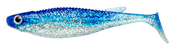
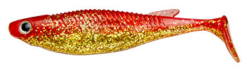
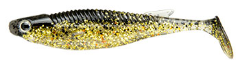
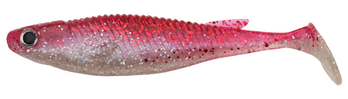

バルト
（BALT）
バルトは、エコギアのシャッドテールワームです。
大きなテールとフラットサイドのボディを組み合わせ、ボリュームのあるボディが生む強い波動と、平らな側面のフラッシングでアピールするのが最大の特徴。ロックフィッシュやフラットフィッシュ向けのリアルなカラーもそろっています。

画像出典:エコギア公式HP
スペック
- メーカー
- ECOGEAR（エコギア）
- タイプ
- シャッドテールワーム
- サイズ
- 3.5インチ（88mm・6本入）／4インチ（102mm・5本入）／6インチ（140mm・4本入）
- カラー
- 全13色
- ターゲット
- ヒラメ・マゴチ・ロックフィッシュ
▼今すぐチェック

バルトの特徴
大きなテール×フラットサイドの新しいシャッドテール
-
ボリュームのあるボディで強い波動
ボリュームのあるボディと大きなテールで、強い波動を出す。安定したハイピッチローリングで、広い範囲の魚に存在を気づかせる。
-
フラットサイドのフラッシング
平らなボディの側面が泳ぐたびに光り、アピール力を高める。濁りや遠くの魚にも気づかせやすい。
-
リアルなカラーとサイズ展開
ロックフィッシュ・フラットフィッシュ向けのリアルなペイントカラーを用意。3.5・4・6インチの3サイズで、ベイトや狙い方に合わせて選べる。
バルトの使い方
ジグヘッドに付けて、底を取ったら底から少し上をただ巻きで泳がせるのが基本です。
ハイピッチローリングは巻くだけで出るので、一定の速さで巻いてフラッシングを見せましょう。4インチは鰯ヘッドや遊動テンヤで広く探る使い方にも向いています。
バルトの得意な状況
サーフや堤防でヒラメ・マゴチを狙う場面や、ロックフィッシュ狙いで出番です。
3.5インチは小さなベイトを食べている魚に、スレさせずに口を使わせられるサイズで、ベイトが小さい時によく釣れます。
ワンポイント
ベイトのサイズに合わせてワームの大きさを選ぶのがコツです。小さなベイトの時は3.5インチ、広く探りたい時は4インチ、遠くの大物を寄せたい時は6インチと使い分けると、その日の状況に合わせやすくなります。テールが大きく水をつかむぶん傷みやすいので、予備を多めに持っていきましょう。
バルトのサイズの選び方
| サイズ | 全長／入数 | 向いている場面 |
|---|---|---|
| 3.5インチ | 88mm／6本 | 小さなベイトの時。スレさせずに口を使わせたい時 |
| 4インチ | 102mm／5本 | 鰯ヘッドや遊動テンヤで広く探るサーチに |
| 6インチ | 140mm／4本 | 遠くから大きな魚を寄せたい時 |
迷ったら3.5インチか4インチから始めるのがおすすめ。サーフのヒラメ・マゴチには3.5インチが扱いやすい。
人気カラー
バルトの人気カラーを紹介します。

イワシイワシを食べている時の定番ナチュラルカラー。

赤金赤と金のアピールカラー。朝夕のマズメや濁りに。

ナチュラルゴールド金のフラッシングで、明るい時間にも。

レッドホロマックス赤とホロの強いアピールカラー。
画像出典:エコギア公式HP
▼今すぐチェック
バルトに似ているルアー
-
 ボーンベイト
ジャクソン
詳細はこちら＞
ボーンベイト
ジャクソン
詳細はこちら＞
フラットボディのシャッドテール。底から少し上をゆっくり巻きたい時に。
-
 サリュー
アダスタ
詳細はこちら＞
サリュー
アダスタ
詳細はこちら＞
フラットフィッシュ用のワーム。サーフで食わせたい時に。
-
 ビーチウォーカー ジャンゴ
DUO
詳細はこちら＞
ビーチウォーカー ジャンゴ
DUO
詳細はこちら＞
サーフ用のジグヘッドワーム。遠投して広く探りたい時に。